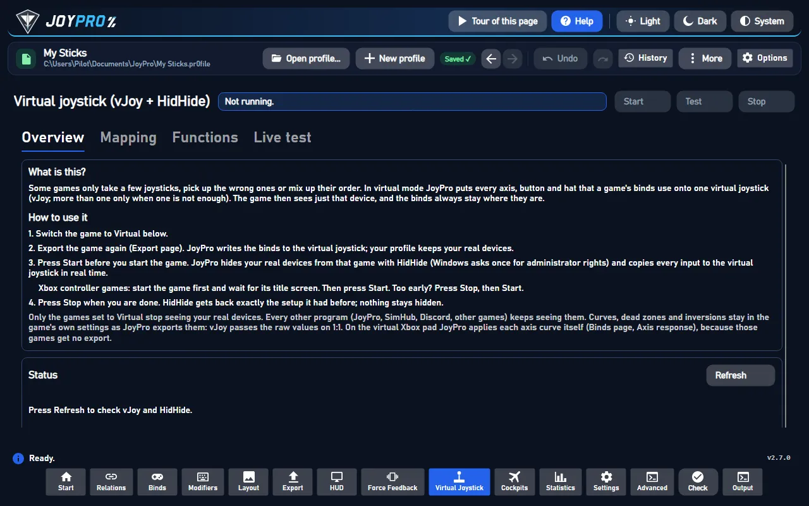

#開
核取方塊已撰寫工具提示 關閉：轉發器會略過此功能（其輸出仍保留）。
有些遊戲只接受少數幾支 joystick、抓到錯誤的裝置，或在您插上另一個裝置時把順序弄亂。在虛擬模式中，JoyPro 會把遊戲綁定用到的每個軸、按鈕和帽子開關放到 一個虛擬 joystick（vJoy）上，或是放到 虛擬 Xbox 360 手把 上，給只讀取遊戲手把的遊戲使用。遊戲看到的是一個輸入永遠不會變動的裝置；您的設定檔則保留您的實體裝置。此外，虛擬功能 能做到 Joystick Gremlin 做的事：把軸的區段當作按鈕、切換、短按／長按、切換層、巨集、模式。


flowchart LR D["您的搖桿、油門、<br/>腳舵、面板"] --> J["JoyPro 即時複製<br/>每個輸入"] J --> V["一個 vJoy 裝置<br/>或模擬 Xbox 手把"] V --> G["設為 vJoy<br/>或 Xbox 手把的遊戲"] D --> O["其他所有遊戲<br/>和程式：<br/>您的實體裝置"]
此頁面所需項目 會顯示免費的驅動程式：vJoy（給設為 vJoy 的遊戲）、ViGEmBus（Xbox 手把）和 HidHide（給 vJoy 遊戲）。它們不是 JoyPro 的一部分；請在那裡一鍵安裝您需要的驅動程式。只讀取 Xbox 手把的遊戲（ACE COMBAT 8、Hell Let Loose: Vietnam）只需要 ViGEmBus：它們永遠看不到您的實體裝置，所以不需要 HidHide，Windows 也不會要求系統管理員權限。
那麼這個頁面會叫做 模擬手把，而且只顯示這些遊戲需要的東西：ViGEmBus 卡片、測試 和 開始。vJoy、HidHide 和模式清單在 顯示進階詳細資訊（vJoy、HidHide、模式） 後面。請參閱 用 HOTAS 玩只支援 Xbox 的遊戲。
測試 會讀取您的裝置，並在 即時測試 分頁上顯示遊戲會收到什麼，而不會動到 vJoy 或 HidHide。移動您的搖桿並觀察長條。
遊戲的控制選單會顯示一個裝置「vJoy Device」，它的按鈕和軸上有您的綁定。只有在虛擬 joystick 執行時，您的實體裝置才會對該遊戲隱藏；其他所有程式都還是看得到它們。曲線、死區和反轉仍然來自 JoyPro 匯出的遊戲自身設定。Xbox 手把 則不同：這些遊戲不需要匯出，所以 JoyPro 會自己套用每個軸曲線（「綁定」頁面的 軸回應）。


總覽：它是什麼以及如何使用；vJoy（版本、裝置）、HidHide 和 JoyPro 工作階段的 狀態（重新整理、當 vJoy 裝置缺少軸、按鈕或帽子開關時的 依表格設定 vJoy、當機後的 還原 HidHide、將 vJoy 設為最大規格：8 個軸、128 個按鈕、4 個帽子開關，需要重新啟動 Windows）；此頁面所需項目；遊戲（每個遊戲選擇原生 / vJoy / Xbox 手把，遊戲會從一個 joystick 讀取什麼，警告顯示在上方）；選項：隱藏實體裝置（HidHide，建議）、在虛擬遊戲啟動和結束時自動啟動和停止（JoyPro 每 3 秒尋找一次；對 vJoy 來說，在遊戲之前按「開始」仍然是最安全的；上述 Xbox 手把遊戲則需要在標題畫面之後）。
對應：對應表。虛擬遊戲使用的每個實體輸入，在虛擬 joystick 上都有固定的位置：軸在空著時保留自己的軸（X 還是 X），按鈕和帽子開關則取用下一個空著的編號。已有的位置永遠不會移動，所以遊戲的綁定每次執行都保持一樣。更新對應 會為新的輸入分配位置，並把對應表儲存在設定檔中。
功能：虛擬功能、它們的模式、Gremlin 匯入和圖表（見下文）。
即時測試：以橫條顯示每個 vJoy 裝置的軸、按下的按鈕和帽子開關，也就是轉送程式寫入的內容，並附上轉送程式的記錄。即時顯示虛擬 joystick（所有遊戲都使用模擬手把的玩家則為：即時顯示模擬手把）會開啟或關閉這些橫條。對於 Xbox 手把，每個已對應的控制項都會說明它的作用和來源（「A: Fire machine gun (VKB Gunfighter BTN1)」、「LX: Roll (Rhino X)」），按下的按鈕會亮起。
engine vjoy pad-check 會顯示設定檔在手把上能用到哪些功能。

功能在虛擬 joystick 內部執行，位於您的裝置和遊戲收到的內容之間。選擇遊戲和類型，按 新增功能，然後在編輯器中設定它的輸入和輸出。
| 功能 | 它的作用 |
|---|---|
| 軸區段 | 把一個軸分成最多 16 個區段，每個區段是一個按鈕（油門段位） |
| 按鈕循環 | 每按一次就切到下一個輸出 |
| 切換（鎖定） | 按一下就保持開啟，直到再按一次的按鈕 |
| 開關轉為開/關脈衝 | 維持式開關在每個位置各送出一個脈衝 |
| 短按 / 長按 / 按兩下 | 一個按鈕三種用途 |
| Shift 層 | 按住 Shift 按鈕時，輸入會送到其他輸出 |
| 合併 / 分割軸 | 把兩個踏板合成一個方向舵；把一個軸拆成兩個 |
| 軸曲線 | 死區、飽和度、曲率、反向、滑桿 |
| 軸兩端轉按鈕、軸轉帽子開關、按鈕轉軸、軸轉編碼器脈衝 | 轉換 |
| 連發、巨集 | 按住時重複；一連串的按鍵和按鈕操作 |
| 帽子開關轉按鈕、按鈕轉帽子開關、重新對應 | 帽子開關和重新對應 |
| 模式開關 | 變更模式（切換到、按住、切換、循環、返回） |
編輯器：名稱、開、鍵盤輸出（讓輸出和巨集步驟能按下鍵盤按鍵；只在真正執行時才會作用）、節點檢視（輸入 → 功能 → 輸出，輸出觸發時會亮起）、邊緣可拖曳的軸區段列、曲線、運作的模式、要切換到的模式、輸入（裝置和輸入，清除）、輸出（vJoy 按鈕或軸、Xbox 控制項或按鍵；綁定關聯 會把一個關聯綁定到該輸出）、設定和巨集步驟。試用 會在編輯器中以滑桿和按鈕執行該功能；不會有任何東西送到 vJoy 或遊戲。儲存 會保存它；執行中的虛擬 joystick 會在停止並重新開始後採用它。
串接：輸入可以讀取另一個功能的輸出，而不是裝置：在輸入的裝置清單中選擇 ⚙ f1 ...，或在 所有功能的圖表 中從輸出點（右邊緣）拖曳到輸入點（左邊緣）。迴圈會被拒絕。點選一條連線，再按它的 × 即可中斷連線。
flowchart LR T["油門軸"] --> B["f1 軸區段<br/>band3 = 後燃器"] B --> TG["f2 切換<br/>讀取 band3"] TG --> V1["vJoy 按鈕 40"] BTN["搖桿按鈕 5"] --> M["f3 模式開關<br/>按住 → Landing"]
模式（層）：讓您的輸入依情況有不同的用途（Combat、Landing ...）。一個模式可以繼承另一個模式；功能會在勾選的模式中運作（都不勾 = 所有模式）。新增模式、重新命名、×（移除）、啟動時（轉送程式啟動時所在的模式）。目前執行中的模式會即時標示。
選擇遊戲，可選擇勾選 取代遊戲的功能與模式，按 匯入 Gremlin 設定檔... 並選擇 .xml（R13 或 R14）。JoyPro 會先顯示一份報告：它會把內容轉換成什麼、哪些 無法處理（啟用條件、滑鼠動作、Python 外掛程式、音效 ...），以及哪些 已匯入，但有差異。在按 匯入 之前不會儲存任何東西。模式、重新對應、曲線、巨集、合併的軸、tempo、chain 和 toggle 容器都會變成功能和模式。接著把遊戲設為 vJoy，保留關聯或把關聯綁定到 vJoy 輸出，匯出後按 開始：HidHide 和轉送程式會取代 Gremlin 的裝置隱藏功能和它的背景程式。
檢視模型：MainWindowViewModel.VirtualJoystick.cs（狀態、對應表、開始/測試/停止、自動啟動、即時檢視）、MainWindowViewModel.VirtualFunctions.cs、MainWindowViewModel.VirtualModes.cs（模式、Gremlin 匯入）、VirtualFunctionEditorViewModel.cs；檢視 VirtualJoystickView.axaml、VirtualFunctionEditorView.axaml、Views/Controls/VirtualFunctionGraphView.cs、VirtualFunctionFlowView.cs、AxisBandEditor.cs。
虛擬搖桿的 開始：
| # | 誰 | 會發生什麼 |
|---|---|---|
| 1 | 您 | 按 開始。 |
| 2 | 引擎 | vjoy map：新的輸入取得一個槽位；該表儲存在設定檔中。 |
| 3 | 引擎 | vjoy forwarder-config：解析後的表和函式。 |
| 4 | 引擎 | vjoy apply-hidhide 先寫入它的日誌，然後對 vJoy 遊戲隱藏實體裝置（HidHide 會要求一次系統管理員權限）。只讀取 Xbox 控制器的遊戲：「不需要 HidHide」，不會跳出提示。 |
| 5 | JoyPro.VJoy | run --sink vjoy --parent-pid N：每一輪（例如每秒 144 次）讀取裝置、執行函式，並寫入 vJoy 或 Xbox 手把。 |
停止：
| # | 誰 | 會發生什麼 |
|---|---|---|
| 1 | 您 | 按 停止。 |
| 2 | JoyPro.VJoy | 停止：輸出回到中立，按鍵放開。 |
| 3 | 引擎 | vjoy restore-hidhide 會準確還原之前的設定。 |
Pr0file.VirtualJoystick）；engine vjoy map（--prune、--reset）、engine vjoy mode（每個遊戲 native | virtual | xbox）、engine vjoy status、engine vjoy settings（JoyPro 使用哪些 vJoy 裝置）、engine vjoy configure-vjoy（vJoyConfig，除了要避免的軸之外，絕不移除任何東西）、engine vjoy limits。engine vjoy apply-hidhide、engine vjoy restore-hidhide、engine vjoy recover：任何變更之前都會先寫入日誌，因此當機後可以還原（還原 HidHide）。engine vjoy functions types、engine vjoy functions list、engine vjoy functions add --game、engine vjoy functions set --game、engine vjoy functions remove --game、engine vjoy functions test（模擬，不會有任何東西送到 vJoy）、engine vjoy modes list。依遊戲儲存在設定檔中（VJoySettings.Functions[game]、VJoySettings.Modes[game]）；它們的輸出會在對應表中保留。引擎的測試、編輯器的預覽和轉送程式執行的是同一套評估程式碼；每一輪都會依相依順序評估功能，每輪不配置任何記憶體（50 個功能每輪約 10 µs）。engine vjoy import-gremlin（--dry-run 用於報告、--replace、--vjoy-device）。gui/JoyPro.VJoy（JoyPro.VJoy.exe run --config ... --sink vjoy|dry），以非獨佔的 DirectInput 讀入，透過 vJoyInterface.dll / ViGEmBus 輸出。「測試」使用 dry sink，且不使用 HidHide。參考：virtual-joystick，驅動程式：components。
本頁背後的功能文件，從儲存庫產生：
43 個控制項，從程式的原始碼讀取：43 個已撰寫，0 個附有來自原始碼的資訊（工具提示、程式碼註解、引擎呼叫），0 個尚待補充。
工具提示 關閉：轉發器會略過此功能（其輸出仍保留）。
工具提示 僅在需要按鍵時使用：讓輸出與巨集步驟可按下鍵盤按鍵（KEY_...）。只有在虛擬 joystick 真正執行時（開始）才會送出，測試時絕不會送出。
工具提示 在此用您於下方設定的輸入（滑桿、按鈕）執行此功能：不會送往 vJoy 或遊戲。頁面上開啟「測試」或「開始」時，長條會改為顯示您的實際裝置（即時）。
工具提示 將最寬的區段一分為二（最多 16 段）。
軸曲線功能：輸出軸會反方向運作。
軸曲線功能：把軸當成單邊軸處理，沒有中心，也沒有中心死區。
功能的編號部分少一個：循環步驟、切換層輸入或巨集輸出。
編輯器中的模式勾選框：在「運作的模式」下，表示功能會在該模式中運作；在「要切換到的模式」下，表示模式開關要切換到的模式。
清除這一列輸入，讓功能不再從那裡讀取任何東西。
工具提示 試用：按住按鈕（再按一次即可放開）
工具提示 將下方指定名稱的關聯綁定到此輸出，如同任何 vJoy 按鈕（engine binds set）。之後請重新匯出遊戲。
巨集：新增一個步驟。只有在「鍵盤輸出」開啟時才能使用按鍵；而且只有在虛擬 joystick 真正執行時才會打出按鍵。
工具提示 讀取您的裝置，並在下方顯示虛擬 joystick 將收到的內容。不會動到 vJoy 與 HidHide。
顯示模擬手把收到的內容。不會有任何變更。
讀取您的搖桿，並在「即時測試」分頁中顯示模擬手把或虛擬 Joystick 會收到什麼。
不會變更任何內容：不會動到 vJoy、模擬手把和 HidHide，所以沒有這些小幫手也能用，設定檔也維持原樣。
工具提示 停止轉發（虛擬 joystick 回到中立），並讓 HidHide 恢復先前完全相同的設定。
工具提示 檢查 vJoy、HidHide 與您的裝置（唯讀：不會變更任何內容）
工具提示 執行一次 vJoyConfig（Windows 會要求系統管理員權限），讓 vJoy 裝置具備表格所需的軸、按鈕與帽子開關。它絕不會移除裝置上的任何功能。
工具提示 讓 HidHide 恢復 JoyPro 變更之前的設定（例如在 JoyPro 或電腦當機之後）。
在 JoyPro 的 HidHide 工作階段開啟時顯示：把 HidHide 恢復成 JoyPro 變更它之前的設定，例如在 JoyPro 或電腦當機之後。
工具提示 JoyPro 使用的每個 vJoy 裝置都設為 8 個軸、128 個按鈕與 4 個帽子開關（需一次系統管理員提示）。需重新啟動 Windows 後才會生效；JoyPro 絕不會自行重新啟動 Windows。
先詢問，然後執行一次 vJoyConfig，讓 JoyPro 使用的每個 vJoy 裝置都有 8 個軸、128 個按鈕和 4 個帽子開關。
必須重新啟動 Windows 才會生效；JoyPro 絕不會自行重新啟動 Windows。
工具提示 檢視已安裝與執行中的項目（唯讀）
工具提示 將此遊戲切換為建議的虛擬模式。之後請重新匯出遊戲。
工具提示 關閉：遊戲會同時看到您的實體裝置與虛擬 joystick，可能造成重複輸入。建議：開啟。
預設為關閉。開啟：JoyPro 每 3 秒尋找一次設為「虛擬」的遊戲，在遊戲啟動時啟動虛擬 joystick，並在遊戲結束時停止它。
不過，在遊戲之前按「開始」仍然最保險，因為有些遊戲只在啟動時尋找裝置。
工具提示 為新輸入分配插槽，並將表格儲存在設定檔中。已有插槽的輸入絕不會移動。
工具提示 以空閒的虛擬輸出新增功能；然後在編輯器中選擇其輸入。
為所選遊戲加入一個所選類型的功能，並配上空閒的虛擬輸出，然後在編輯器中開啟它；接著在那裡選擇它的輸入並按「儲存」。
工具提示 移除此模式（會先詢問）
在模式上：詢問後移除它。原本只在這個模式中運作的功能，之後會在每個模式中運作；模式開關不再以它為目標；從它繼承的模式改為從它的上層模式繼承。
工具提示 轉發器以此模式啟動
選擇一個 Joystick Gremlin 設定檔，並以試執行的方式執行匯入：報告會顯示它找到的裝置、它會建立的功能和模式、它無法匯入的內容，以及有哪些不同之處。
目前還不會儲存任何東西。
在右側的編輯器中開啟這個功能。
開啟或關閉這個功能。關閉：轉發器會略過它，它的輸出仍會保留。
工具提示 遊戲的每個功能都是一個節點：將輸出拖曳到輸入即可串接功能
工具提示 將功能儲存在設定檔中。執行中的虛擬 joystick 需在「停止」再「開始」（或測試）後才會套用。
工具提示 不儲存並關閉編輯器。
關閉 Gremlin 報告，不匯入任何東西。